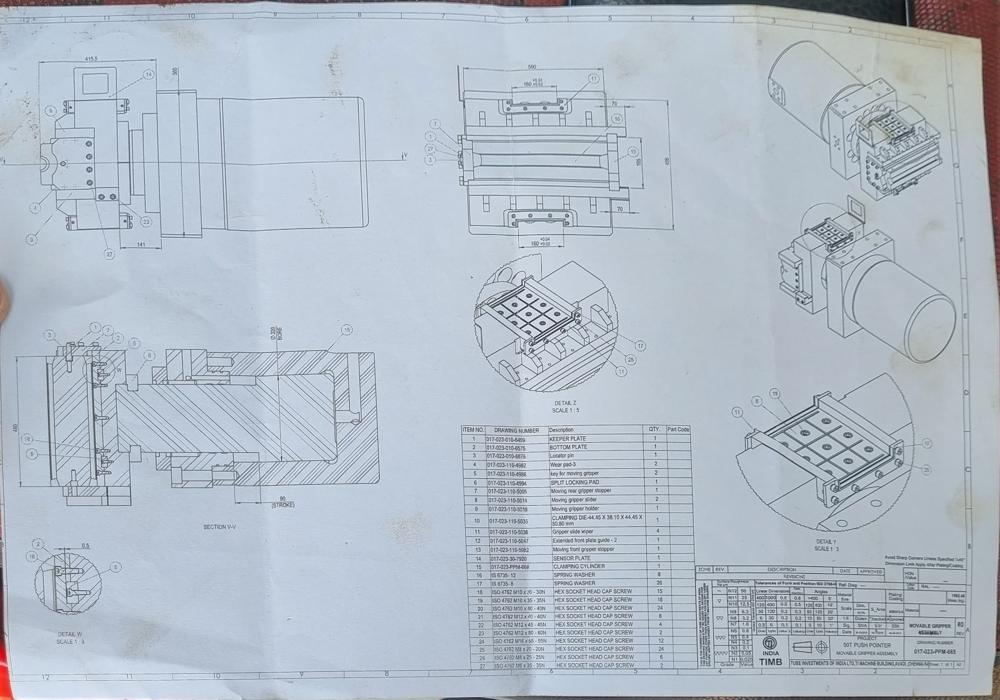

🔧 Pull-Back Machine Component – Tubes Investment of India
📌 Title: Pull-Back Mechanism for Tube Forming Machine
🔹 Problem
In tube manufacturing, precise control of the tube's position during forming is critical. Manual handling often leads to misalignment, defects, and reduced throughput.
🔹 Solution
- Designed a mechanical pull-back mechanism to automate tube positioning
- Integrated with existing forming machine for seamless operation

- Utilized cam and lever system for synchronized movement
🔹 Benefits
- Improved alignment and consistency in tube forming
- Reduced manual intervention and operator fatigue
- Increased production efficiency and product quality
🖼 Image Reference: Pull-Back Mechanism Diagram (see project documentation)